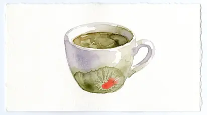
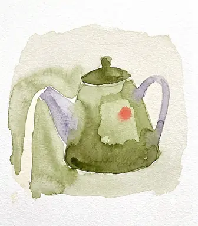
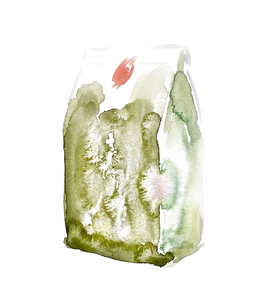
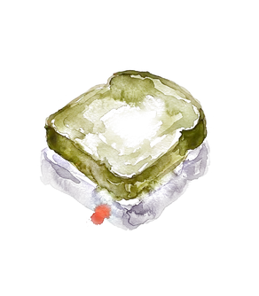
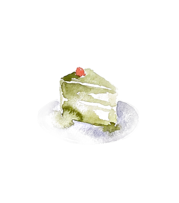

The board

Coffee
Oat, no charge
- Filter3.20
- Espresso2.60
- Cortado3.40
- Flat white3.80
- Latte4.00
- Cold brew4.20
This week it is a washed Kirinyaga — blackcurrant, quite bright, better as filter than with milk.

Tea
Leaf, in a pot
- Pot of leaf tea4.20
- Matcha4.60
- Chai4.40

Take home
Roasted Tuesdays
- Beans, 250g12.00
- Filter papers4.00

Kitchen
Eleven till three
- Toast, butter & jam4.50
- Cheese toastie7.50
- Soup of the day7.00
- Croissant3.60
One soup, made in the morning. When it is finished the pot is washed and that is the end of it.

Sweet
Baked here
- Cake of the day4.80
- Cardamom bun4.20
Cold
From May
- Iced filter4.00
- Iced matcha5.00
- House lemonade3.80
41 Lower Marsh · London SE1
Wed–Fri 07–16 · Sat–Sun 08–16